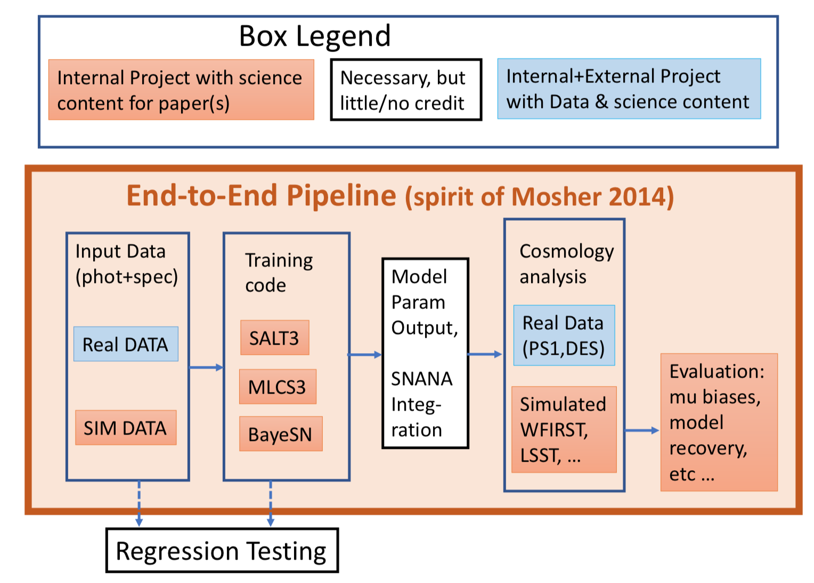

SALTShaker and SALT3¶
Overview¶
SALT is a model of Type Ia supernovae (SNe Ia) that accounts for spectral variations as a function of shape and color (Guy et al., 2007; Guy et al., 2010; Betoule et al., 2014). With SALTShaker we have developed an open-source model training framework and created the “SALT3” model. We more than doubled the amount of photometric and spectroscopic data used for model training and have extended the SALT framework to 11,000 Angstroms. In the coming years, SALT3 will make use of data from the Vera Rubin Observatory, and the Nancy Grace Roman Space Telescope and can be re-trained easily in the coming years as more SN Ia data become available.
Please report bugs, issues and requests via the SALTShaker GitHub page.
SALT3 Model and Training Data¶
The latest version of the SALT3 model has been released in:
Taylor et al., 2023, MNRAS, 520, 5209T
This model includes full re-calibration of the SALT3 training data (Brout et al., 2021) to match SALT training sets used in the Pantheon+ analysis. Other SALT3 publications include:
Pierel et al., 2021, ApJ, 911, 96P: model-independent simulation framework for SALT3 validation.
Kenworthy et al., 2021, ApJ, 923, 265K: SALT3 model and SALTShaker framework.
Pierel et al., 2022, ApJ, 939, 11P: A near-infrared extension to the SALT3 model.
Dai et al., 2023, ApJ, in press: SALT3 model validation with extensive simulations and full training pipeline.
Jones et al., 2023, ApJ, in press: a host-galaxy mass-dependent SALT3 model.
The latest SALT3 model files are linked here. SALT3 light curve fits can be performed using sncosmo (currently the latest version on GitHub is required) or SNANA with the SALT3.K21 model, with a brief sncosmo example given below.
The latest SALT3 training data is also fully public and included here. This release includes all photometry and spectra along with everything required to run the code. Once SALTShaker has been installed via the instructions in Installation, the SALT3 model can be (re)trained following the instructions in Getting Started Quickly.
Example SALT3 Fit¶
Fitting SN Ia data with SALT3 can be done through the sncosmo or SNANA software packages. With sncosmo, the fitting can be performed in nearly the exact same way as SALT2. Here is the example from the sncosmo documentation, altered to use the SALT3 model. First, install the latest version of sncosmo; SALT3 is included beginning in version 2.5.0:
conda install -c conda-forge sncosmo
or:
pip install sncosmo
Then, in a python terminal:
import sncosmo
data = sncosmo.load_example_data()
model = sncosmo.Model(source='salt3')
res, fitted_model = sncosmo.fit_lc(data, model,
['z', 't0', 'x0', 'x1', 'c'],
bounds={'z':(0.3, 0.7)})
sncosmo.plot_lc(data, model=fitted_model, errors=res.errors)
Pipeline¶
In Dai et al., 2023 we present a pipeline to fully test and validate the SALT3 model in the context of cosmological measurements. Defails are given in Running the Pipeline.
